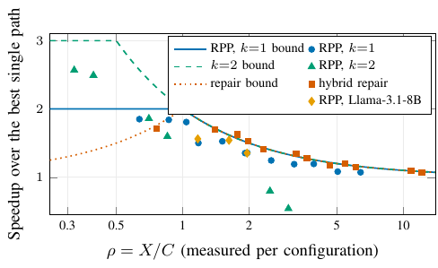

Multi-turn LLM serving at the mobile edge
Replicas become compute when a long turn arrives.
MobiKV schedules the executor, repairs missing KV state, and uses a replica-assisted parallel prefill when transfer and recomputation meet at the edge.
1Independent Research · 2Shenzhen MSU-BIT University · 3Simon Fraser University · 4Shenzhen University
Replica-assisted parallel prefill

Snapshot
One controller connects cache placement to prefill parallelism.
MobiKV separates where a turn executes from where its conversation state is stored. The ratio ρ of transfer time to compute time tells the controller when a replica can shorten the critical path.
Method
Cache availability and long-prefill cost are one scheduling problem.
The system keeps a single secondary copy during the user's think time, predicts the ready time at each eligible executor, and spends a replica on parallel prefill only when the measured operating point supports it.
Choose the executor
Combine GPU queues, link backlogs, cache holders, and TPOT stall debt into a per-request decision.
Repair the missing KV
Use transfer, recomputation, or hybrid repair according to the current compute–transfer ratio.
Use the replica as a helper
Split a long prefill across the replica holder and executor, streaming each layer's KV as soon as it is ready.
Protect decoding
Decode-first background replay gives ongoing output tokens priority over replica refresh work.
Evidence
The measured ratio predicts where RPP helps.
The sweep varies ρ on the same A800-calibrated workload. Lines are seed means and pale bands are mean ± sample standard deviation across 20 seeds.



Reproduce
Start with the CPU smoke test, then move to measured GPU costs.
The repository separates simulator inputs, measured cost models, real-GPU measurement, and aggregation scripts. Model weights and raw traces stay with their original providers.
Quick start
python3.10 -m venv .venv
source .venv/bin/activate
pip install -r requirements.txt
python examples/smoke_test.pyRelease
Code is public now. Data follows a provenance-first release plan.
We release executable code, measured cost models, aggregation scripts, and compact summaries in GitHub. Public mobility and conversation traces remain linked to their original sources. Raw prompts, generated text, model weights, private host paths, and network identifiers are excluded from the artifact.
GitHub
Versioned code, configs, documentation, paper PDFs, and small summary tables.
RepositoryHugging Face Dataset
Recommended for sanitized edge-shard aggregates, manifests, and public-schema examples from the completed online replay.
Release contentsLong-term archive
A tagged Zenodo archive can provide a DOI once the paper version and data card are final.
Planned releaseCitation
If you use MobiKV, please cite the paper.
@article{wang2026mobikv,
title = {MobiKV: Replica-Assisted KV Cache Scheduling for Multi-Turn LLM Serving at the Mobile Edge},
author = {Wang, Wenbin and Wang, Runan and Liu, Jiangchuan and Hu, Xiping},
year = {2026}
}